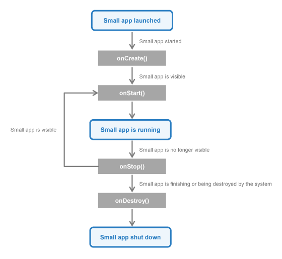

android.content.ContextWrapper
com.sony.smallapp.SmallApplication
android.content.ContextWrapper
com.sony.smallapp.SmallApplication
|
|||||||||
| PREV CLASS NEXT CLASS | FRAMES NO FRAMES | ||||||||
| SUMMARY: NESTED | FIELD | CONSTR | METHOD | DETAIL: FIELD | CONSTR | METHOD | ||||||||
java.lang.Object
public class SmallApplication
The SmallApplication class is the base class to implement each Small App.
The SmallApplication class has a similar interface and similar lifecycle with the Activity class.
Each SmallApplication class has a SmallAppWindow to interact with users.
You can use setContentView(android.view.View) to place your UI on a
SmallAppWindow.
All SmallApplication classes must have a corresponding <service>
declaration in their package's AndroidManifest.xml.
The following diagram shows the important state paths of a SmallApplication.

All SmallApplication classes must have a corresponding <service>
declaration in their package's AndroidManifest.xml.
See here for
more detail information.
If the configuration of the device (as defined by the Resources.Configuration
class) changes, the Small App will restart because everything in the user
interface will need to be updated to match this configuration. In order to
handle the configuration change, you can override
onSmallAppConfigurationChanged(android.content.res.Configuration) method.
| Constructor Summary | |
|---|---|
SmallApplication()
|
|
| Method Summary | |
|---|---|
android.view.View |
findViewById(int id)
Find a view that was identified by the ID attribute from the XML that was processed in onCreate(). |
void |
finish()
Call this when your Small App is done and should be closed. |
android.content.Intent |
getIntent()
Retrieve the intent that started this Small App. |
SmallAppWindow |
getWindow()
Retrieve the current SmallAppWindow for the Small App. |
protected void |
onCreate()
Called when the Small App is starting. |
protected void |
onDestroy()
Perform any final cleanup before a Small App is destroyed. |
protected boolean |
onSmallAppConfigurationChanged(android.content.res.Configuration newConfig)
Called when the device configuration changes while your Small App is running. |
protected void |
onStart()
Called after onCreate(). |
protected void |
onStop()
Called when the Small App is no longer visible to the user. |
void |
setContentView(android.view.View view)
Set the Small App content to an explicit view. |
void |
setContentView(int layoutResID)
Set the Small App content from a layout resource. |
void |
setMinimizedView(android.view.View view)
Set the Small App content to show when the Small App is minimized. |
void |
setMinimizedView(int layoutResID)
Set the Small App content to show when the Small App is minimized from a layout resource. |
void |
setTitle(java.lang.CharSequence title)
Change the title associated with this Small App. |
void |
setTitle(int titleResID)
Change the title associated with this Small App. |
| Methods inherited from class java.lang.Object |
|---|
clone, equals, finalize, getClass, hashCode, notify, notifyAll, toString, wait, wait, wait |
| Constructor Detail |
|---|
public SmallApplication()
| Method Detail |
|---|
public android.view.View findViewById(int id)
onCreate().
id - Resource ID for desired view.
public void finish()
public android.content.Intent getIntent()
Note that this method needs to be called after onStart().
public SmallAppWindow getWindow()
SmallAppWindow for the Small App.
protected void onCreate()
setContentView(android.view.View) to inflate the Small
App's UI, using findViewById(int) to programmatically interact
with widgets in the UI, etc.
Derived classes must call through to the super class's implementation of this method.
protected void onDestroy()
Derived classes must call through to the super class's implementation of this method.
protected boolean onSmallAppConfigurationChanged(android.content.res.Configuration newConfig)
newConfig - The new device configuration.
android.app.Service#onConfigurationChanged(android.content.res.Configuration)protected void onStart()
onCreate(). The Small App is now being displayed to the
user. The counterpart to onStop().
Derived classes must call through to the super class's implementation of this method.
protected void onStop()
onStart().
Derived classes must call through to the super class's implementation of this method.
public void setContentView(int layoutResID)
layoutResID - Resource ID to be inflated.public void setContentView(android.view.View view)
view - The desired content to displaypublic void setMinimizedView(int layoutResID)
layoutResID - The layout id of the extra contentpublic void setMinimizedView(android.view.View view)
view - The extra content to show when minimized.public void setTitle(java.lang.CharSequence title)
title - Title.public void setTitle(int titleResID)
titleResID - Resource ID for desired title.
|
|||||||||
| PREV CLASS NEXT CLASS | FRAMES NO FRAMES | ||||||||
| SUMMARY: NESTED | FIELD | CONSTR | METHOD | DETAIL: FIELD | CONSTR | METHOD | ||||||||